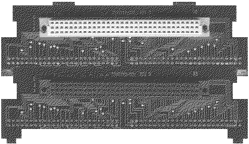
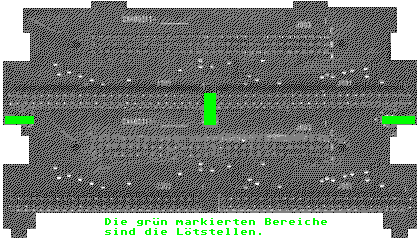

Previous
Next
TOC
Folgende Leistungsmerkmale hat der VME Bus:
Unterstützung von Mikroprozessorsystemem mit bis zu 32 Bit Wortbreite
Für den Einsatz in Multiprozessorsystemen vorgesehen
Datendurchsatz mit bis zu 20 Millionen Bytes pro Sekunde
Vollständig asynchrones multiplexfreies Busprotokoll
Interruptverarbeitung in sieben Prioritätsebenen mit Daisy Chain
Zusätzliche Adressmodifierleitungen für die Speicherverwaltung
Zusätzliche Leitungen für Systemstatusmeldungen.
Ein VME Bus Doppelsteckplatz im TT030 als Eigenbau
Zumindest am TT030 macht es sinn, den VME Bus auf 2 Steckplätze zu
erweitern.
Wie das geht wird jetzt erklärt.
Ganz zu anfang gleich das wichtigste:
Es passt aufgrund der größeren Abmessungen zwangsweise nicht in das
Originalgehäuse eines TT030 rein!
Einfach einen zweiten VME Steckplatz besorgen und diesen Huckepack
auf den anderen setzen. Nun wird vom oberen Steckplatz der Schutz-
lack links, rechts und zwischen den 50 poligen Steckverbindern weg-
gekratzt, eventuell müssen noch die beiden "Höcker" vom unteren
Steckplatz abgefeilt werden.

An diesen drei freigekratzten Stellen werden jetzt die beiden Steck-
plätze zusammengelötet.

weiterblättern
Kapitel Der VME Bus im MegaSTE und TT030, Seite 4